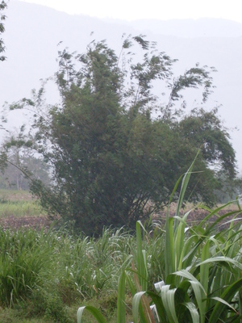
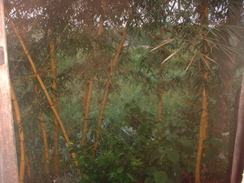

kawayan  
/kawayan/
n.
“kawayan_bamboo”
n.
Bambusa_spinosa
spiny bamboo
Ka kawayan iyan ka pinamula ne ne mallayat wey masulug se dewun wey sugpang. Egkatalibubu seini ke egtubu wey dereisek se dewun din. Nakalkalasi ka ngaran kayi, due bentung, damuluwan, wey laye, wey masalig pad ka duma. Malabirey seini ne pinamula wey warè behas. Ne masalig man-e ka egkahamitan te seini ne pinamula: igseeg, ig-alabat, ig-atep, eggimuwen ne pinnuuwan, lamisa, limuranan te seleppì, igpanuley sahing wey baley ne egpakasulad e wey igpaniyuk te sahing wey kasilè wey duma pad ne igpamalegyè.
Meupiya ne igpamula ka kawayan diyè te ilis te weyig su eyew kenè egkatebal ka tanè ke egbaggiyu.
Bamboo is good to plant along the river so that the soil will not slip down during flood.
Wrd.Gloss: kawayan_bamboo
Cult. 25 m. high, 20 cm. diam., 50 cm internodal length, green.
Data Qual: Brown 1, 106
Eng. bamboo variety
Tag. kawáyan
Ceb. kawáyan
Ilo.: kawáyan
OCM: Flora (137)
Online dict status: -
Usage level: M
Updated by: RJH,AAA,TME
Last updated: 13/Oct/2009
"kawayan" in healthbook "Nahepu ka belad ni Binuy"
This page last updated: 19/May/2012
Copyright © 2009-2010, Matigsalug Language Christian Association, Inc